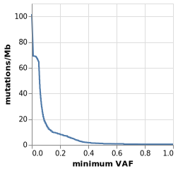

Varlociraptor enables an uncertainty aware computation of the tumor mutational burden (TMB). TMB is usually defined as the number of somatic, non-synonymous coding mutations per megabase of the measured coding genome. With
varlociraptor --coding-genome-size 3e7 --tumor-sample tumor --somatic-tumor-events SOMATIC_TUMOR < calls.annotated.bcf > tmb.vl.json
Varlociraptor will produce a Vega-Lite specification of a plot, where the x-axis depicts the
minimum allele frequency, and the y-axis shows the TMB in mutations per megabase.
The input file calls.annotated.bcf has to be a VCF/BCF file that has been obtained from Varlociraptor and annotated with e.g. SnpEff, such that Varlociraptor can select non-synonymous coding mutations.
The vega specification is a text file in JSON format, that can be converted to e.g. an SVG image via the Vega-Lite command line utilities:
vl2svg tmb.vl.json tmb.svg
Note that the coding genome size given with --coding-genome-size has to reflect the measured part of the coding genome.
In case the estimation is conducted on e.g. panel sequencing (where only a small number of genes is captured), the value has
to be the size of the coding genome within this capturing.
After using vl2svg for convertion of the JSON to an image, the result can look like this:

Importantly, the TMB is calculated as expected value over the posterior probabilities for each variant to be somatic. Hence, the TMB estimate properly considers the uncertainty in the data. Moreover, as we show a TMB estimate for each minimum allele frequency, it becomes possible to reason over the clonal structure of the tumor, instead of considering only a single overall number. We expect this to increase the predictive power of the TMB.